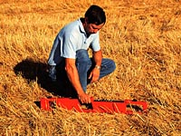

|

Agriculture Extension Services Saskatchewan farmers count on a team of provincial government extension agrologists to provide impartial information and advise. The agrologist in the graphic is measuring the degree of soil salinity using an EM38 electromagnetic instrument. Animal Feed and Health The feed industry relies on the expertise of agrologists to ensure nutritionally sound, custom blended animal rations. In addition, agrologists work in both the private and public sector safeguarding animal health. Biotechnology and Research The Canadian plant breeding and biotechnology industry continues to lead the world as agrologists develop new and superior plant varieties to deliver an efficient and reliable food supply. Research agrologists are making breakthroughs in animal health, productivity and marketing. Consulting Agrologists Consulting agrologists offer advice and solutions to farming and agri-business challenges that are custom tailored to meet client needs. These services encompass everything from feasibility studies and business planning to scientific evaluations. Crop Protection The crop protection industry counts on agrologists to develop and market herbicides and pesticides. As a result, Canada grows and exports crops known the world over for exceptional quality while ensuring long term environmental protection. Finance and Business Management Financial institutions hire agrologists to provide farm management counselling and develop financial products and services that help farmers and agri-businesses to succeed. Food Safety Canadians continue to enjoy the safest food supply in the world thanks in large part to the diligence of agrologists in regulating and safeguarding food production and processing. Valuation Assessment Throughout Saskatchewan, farmland assessments is carried out by agrologists with specialized training in soils and real estate appraisal. |